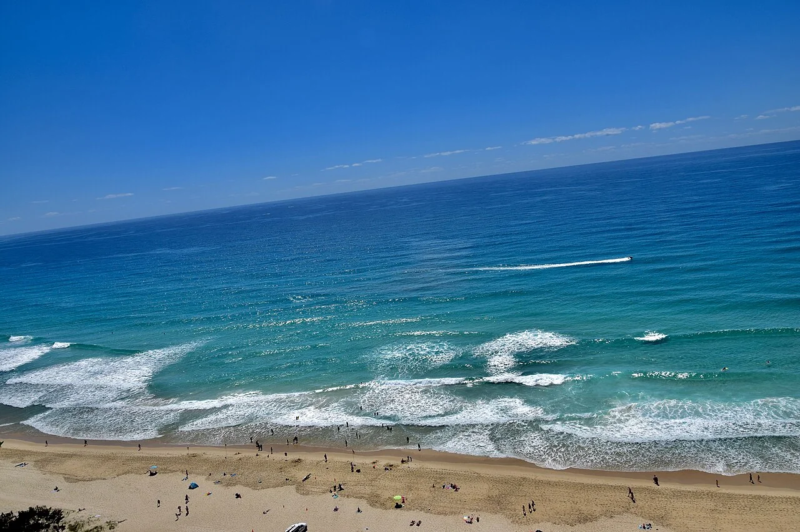

Surfers Paradise — Gold Coast
Gold Coast, Queensland, Australie · surf, baignade

Plage d’environ 2 km, la plus connue du Queensland selon Surf Life Saving Australia, devant la station de Surfers Paradise, sur la Gold Coast. Trois tours de surveillance (34, 35 et 36), sur l’Esplanade, sont tenues par des lifeguards de 8 h à 17 h, tous les jours de l’année (Ville de Gold Coast). Sur la Gold Coast, la mer est à 25,8 °C en moyenne en janvier (seatemperatu.re).
- Lieu
- Gold Coast, Queensland, Australie
- Niveau
- Variable selon les conditions
- Activités
- surf, baignade
- Type d'eau
- Mer / océan
- Coordonnées
- -28.00, 153.43 (position approximative du secteur)
Dangers à connaître
- Plage dominée par les courants d’arrachement : ils sont présents dès que les vagues déferlent, et de profonds chenaux peuvent partir du rivage.
- Un poste peut fermer quand les conditions sont dangereuses ou pour des travaux : vérifie que la plage est surveillée avant d’entrer.
- Selon Surf Life Saving Australia, c’est l’une des plages les plus aménagées et les plus utilisées d’Australie.
Le conseil d'Ocean Buddy
Baigne-toi entre les drapeaux rouge et jaune, devant une des tours. Si tu surfes, observe la mer avant d’entrer : en cas de doute, ne rame pas.
Ouvrir dans Ocean Buddy Télécharger sur l'App Store
Source : Fiche Ocean Buddy · décembre 2026 · d’après la Ville de Gold Coast, Surf Life Saving Australia et seatemperatu.re · à vérifier localement.